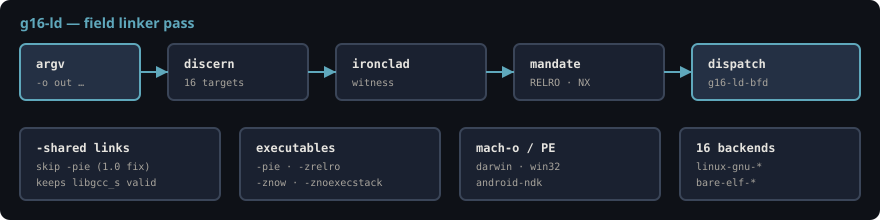

g16-ld is a bash wrapper around forge/g16-linker.py. BFD backend: libexec/grok16/g16-ld-bfd. Doctrine: data/g16-linker-doctrine.json — 16 active targets.

./scripts/grok16-toolchain.sh verify # includes linker smoke
pythong forge/g16-linker.py targets
pythong forge/g16-linker.py json| Link kind | Injected flags |
|---|---|
| Executable | -pie -zrelro -znow -znoexecstack |
-shared | -zrelro -znow -znoexecstack — no -pie (1.0) |
-r / -static | none |
linux-gnu (x86_64, aarch64, arm, riscv), android (NDK), darwin/ios (mach-o), win32 (PE), bare-elf. C64 Ultimate is a hardware pair — not a linker backend. Classic C64 is Queen CHIPS only.
Env overrides: G16_LINK_TARGET, ANDROID_NDK_ROOT, G16_CROSS_PREFIX.